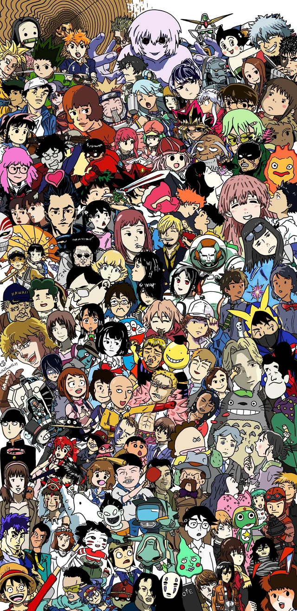

Anime is a term for Japanese animation. It's characterized by distinct artistic styles, diverse storytelling, and a wide range of genres, from action and adventure to romance, science fiction, and fantasy. While originating in Japan, anime has gained global popularity and influence.
| NAME | GENRE | WHY WATCH IT | RATINGS |
|---|---|---|---|
| Solo leveling | Action | If you love watching action anime this one is for you currently ongoing and have some solid plot the animation style is on another level. |
8.4/10 |
| Blue lock | Sport | If you love sport specifically foot ball bro you are missing something exceptinal jsut give it a try. |
8.1/10 |
| Naruto | Action,Comedy, Adventure Fantasy |
This anime belong to the big 3 animes this is a very long anime but every minute is worth it you will see everything in this anime |
8.4/10 |
"Attack on Titan" stands as a monumental achievement in anime, captivating me with its relentless intensity and intricate narrative. From the very first episode, the series plunges viewers into a world of desperate survival, where humanity teeters on the brink of extinction against the terrifying Titans. The show's brilliance lies not only in its breathtaking action sequences and stunning animation, but also in its profound exploration of complex themes like freedom, prejudice, and the cyclical nature of violence. The characters, each grappling with their own inner demons and moral dilemmas, are remarkably well-developed, making their struggles feel deeply personal. The constant twists and turns in the plot, coupled with the gradual unveiling of the world's dark secrets, create an atmosphere of suspense that keeps me perpetually on the edge of my seat. "Attack on Titan" is more than just an anime; it's a thought-provoking masterpiece that leaves a lasting impact.

Naruto Uzumaki, the heart and soul of his eponymous series, embodies the very essence of perseverance and unwavering belief. Initially an ostracized orphan, Naruto's journey resonates deeply because of his relentless pursuit of acceptance and his dream of becoming Hokage. His boisterous personality and seemingly endless supply of optimism mask a deep-seated loneliness, making his triumphs all the more impactful. What truly sets him apart is his unwavering commitment to his friends and his refusal to give up, even in the face of overwhelming odds. He learns from his mistakes, grows stronger through adversity, and inspires those around him to do the same. From his iconic "believe it!" to his powerful Rasengan, Naruto's spirit is infectious, reminding us that with determination and a kind heart, even the most impossible dreams can become reality. He is not just a character; he is a symbol of hope.